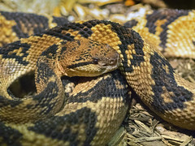
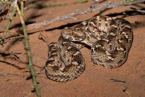
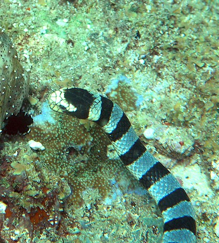

Venomous Snakes:
There are many types of snakes, however, not all of them are deadly. These ones, on the other hand, are.
"Nashville Zoo 08-27-2014 - South American Bushmaster 1"by David441491 is licensed under CC BY-NC-ND 2.0


The South American Bushmaster (Lachesis muta) is a snake commonly found in main regions of south america. It's prey consists of small rodents, and it has a potentially lethal venom. It can reach lengths of up to 12 feet. This snake is typically yellow, red, orange, or brown. This snake's venom attacks the heart and blood. Their size means that they produce large amounts of venom.
"Echis carinatus"by AlexandreRoux01 is licensed under CC BY-NC-ND 2.0


The saw scaled viper (Echis carinatus) can be found in the middle east. It is very common in densely populated areas. Because of this, it is responsible for more human deaths than any other snake. The snake's venom attacks the cell membrane and destroys it. If people do survive, they may still lose a limb. Scientists are attempting to discover an antivenom that can save both life and limb.
"Banded Sea Snake 73"by High Desert Rider is licensed under CC BY-NC-ND 2.0


Another deadly snake is the Faint-banded sea snake (Hydrophis belcheri), it has an extremely dangerous bite, a single drop can kill around 1,800 people. Thankfully, it is not commonly known to bite humans (unless provoked, of course).